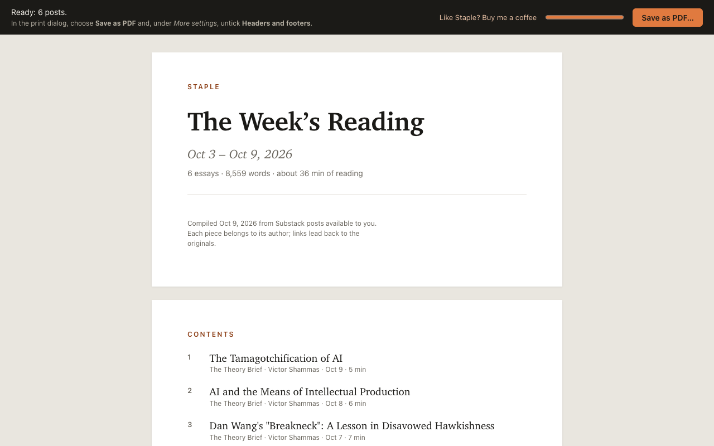
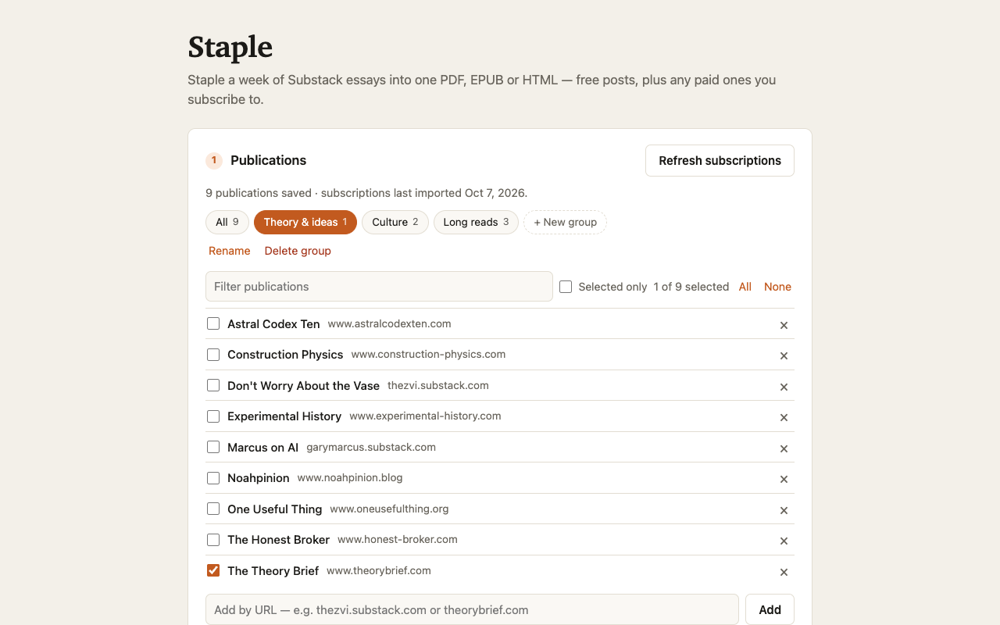

Your week of Substack, stapled into one collection.
Staple gathers the Substack essays you can read, free posts plus paid ones you subscribe to, into a single PDF, EPUB or HTML file for offline reading.

The essays, without the clutter.
Staple keeps the writing and drops the rest, so a week of posts reads like a book.
PDF, EPUB or HTML
A print-ready PDF with a cover, linked contents, page numbers and footnotes. An EPUB for Apple Books, Kobo, Calibre or Send to Kindle. Or one self-contained HTML file that opens in any browser, offline.
Your subscriptions, in one click
Import the publications you subscribe to, or add any Substack by its URL, including publications on their own domain.
Free and paid posts
Staple uses your own Substack sign-in, so it includes free posts plus the paid posts you already subscribe to. It never gets around a paywall.
Previews, clearly marked
Paid posts you don't subscribe to are left out. One click includes the free preview anyone can see, marked “preview only”: handy for deciding whether to subscribe.
Groups
Save sets of publications, like “AI” or “Culture”, and switch between them in one click. “All” ticks everything.
Essays, not notes
Choose a date range (the last 7 days by default) and a minimum length (400 words by default). Podcasts and threads are skipped.
Clean reading
Subscribe buttons and share widgets are removed. Tweets, videos and embedded posts become tidy quotes and links. Footnotes are kept and linked.
Image size
Full width, 75%, 50%, 25% or none. Smaller images make smaller files.
Back to the writers
Every post ends with a link to the original, so you can like, comment or restack it on Substack. A closing note encourages supporting the writers.
How it works
Click Staple's icon in the Chrome toolbar and it opens in a tab of its own.
Pick your publications
Import your subscriptions, or add a Substack by URL. Then tick the publications you want, or pick a group.
Choose dates and length
The last 7, 14 or 30 days, or any range, and a minimum length. Staple lists the posts it finds; untick any you'd rather skip.
Make PDF, EPUB or HTML
Choose an image size and a format. The PDF opens in Chrome's print dialog, ready to save. The EPUB and HTML files download straight away.

Private by design
There is no Staple account and no Staple server. Everything happens in your browser, using the Substack sign-in you already have, and nothing is sent to me or anyone else.
- No account, no sign-in to Staple
- No analytics, tracking or ads
- Runs entirely in your browser
- Connects only to Substack and its image server
- Other sites only with your permission, one by one
- Settings stay in your browser's local storage
Requirements
- Google Chrome 131 or later on a desktop computer: Mac, Windows, Linux or ChromeOS.
- A Substack account, but only to import your subscriptions and include paid posts you subscribe to. Free posts work without one: add a publication by its URL.
Questions? See Support & FAQ.
Staple is free. If it’s useful to you, consider buying me a coffee.